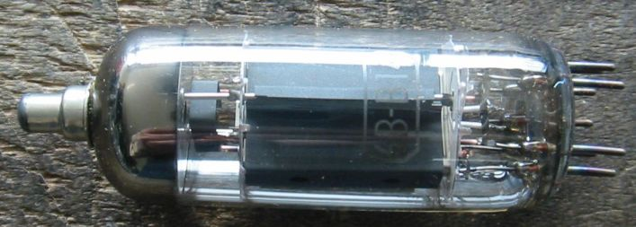
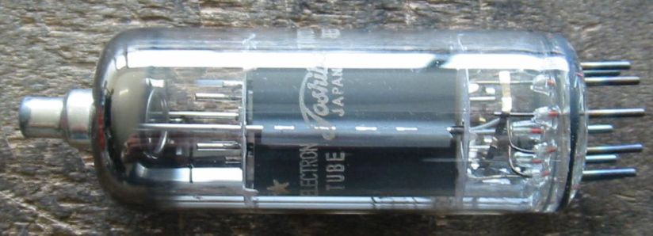
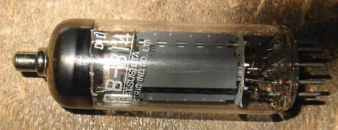
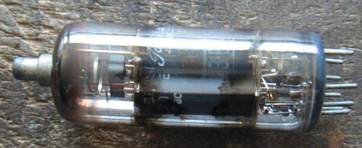
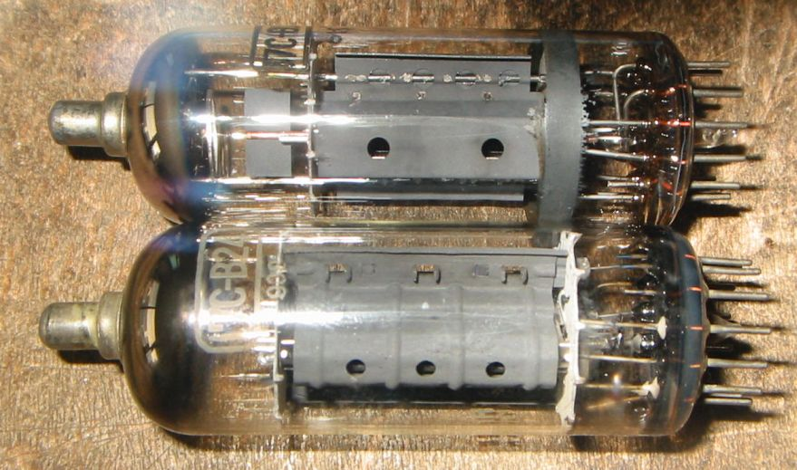

6B-B14などのマグノバー管について
ここには日本独自のマグノバー管を集めてあります。
ヨーロッパ系のマグノバー管は２５E5のところにあります。

12B-B14 Toshiba NOS

12B-B14 MATSUSHITA NOS 国産品には珍しくプリントが斜めになっています。

１２B-B14 Used この球というよりマグノバーの中古管はガラスに黒いシミができていることがあります。
でも問題なく使えます。

MITSUBISHI 17C-B24 1本はプレートの形が変わっています。もう1本は箱形のプレートで側面の穴が2個
下部ガラスの外側に帯電防止用の塗装があります。これは17GB3をコンパクトロンにしたものと思われます。
Ef/If=16.5V/0.45A、Ep/Pp=770V/14W、Esg/Psg=250V/5W、 Gm=14000μ、μ2=6

TV水平出力管(欧州系)のページに戻る